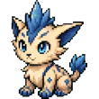

 ElectricRock
ElectricRockTap a stage to read its story.
A small cream-and-tan feline-shaped creature with a bright blue electric-charged crest of spines fanning above its head like a crown, Spikkit scrambles along the low granite ledges of granite heights with quick nimble paws. Its blue eyes crackle slightly when it blinks. When two Spikkits meet and press crests together, the resulting static pop can stun a fly at two paces. They sleep coiled in shallow granite bowls worn smooth by centuries of their ancestors before them.
Field note: Spikkit's crest discharges with a visible blue flash every time it sneezes, which happens often in dusty granite tunnels.
Granite Heights. Spikkit and its family are found in the Granite Heights. See everyone who lives there.
Share a Bond Food that matches its types to become friends. Spikkit loves:
A Bond Food is not a trick. It joins your spirit with the Kimuro's spirit, and only when it chooses you.
Print the Kimuro adventure packs: mazes, cards, a board game and Bond Mark medals.
See the printable packs